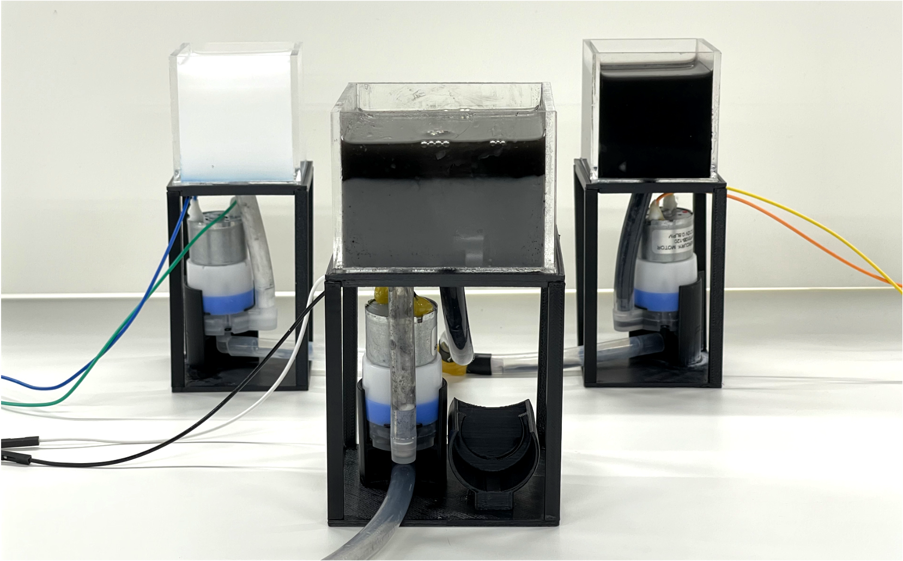
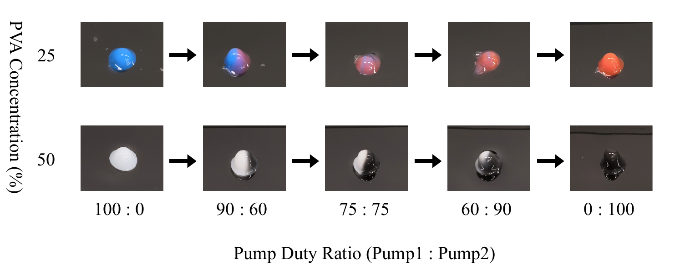
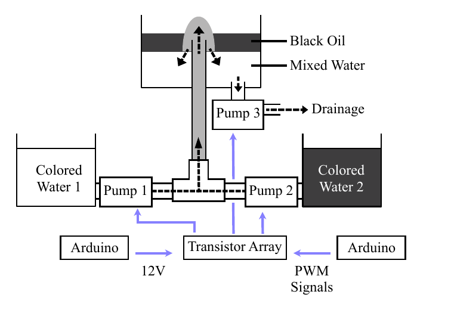

ColorFlow

- Liquid Surface Display
- Color Mixing
- Two-Pump Flow Control
- Water / Oil Interface
- Arduino Mega
ColorFlowは、EmerFluxの白い液体ピクセルに色の表現を加える研究です。異なる色の液体を1つのピクセルに送り込み、黒い液面上で色が変化する表現を目指しました。
2台のポンプから送られる液体をT字型の管で合流させ、1つのノズルから表示槽へ押し上げます。それぞれのポンプの流量比を変えることで、ピクセル内の色の割合や混ざり方を制御します。別のポンプで表示槽の水位を保ちます。
試作した単一ピクセルで、PVA濃度50%の黒と白の液体は分かれたまま現れ、PVA濃度25%の赤と青の液体は混ざって流量比に応じて色が連続的に変化しました。液体の粘度によって異なる色の表現ができることを示しています。複数ピクセルへの拡張は今後の課題です。
本研究はNICOGRAPH International 2026でポスター発表し、Best Poster Presentation Awardを受賞しました。

